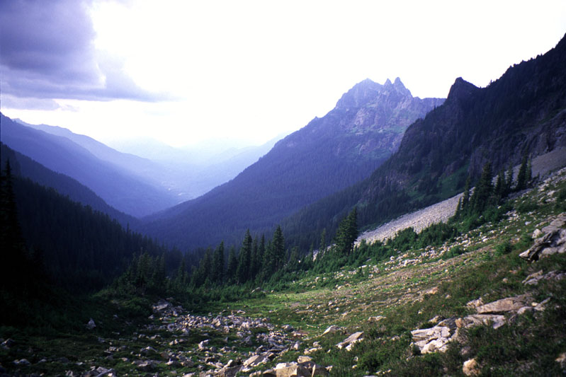
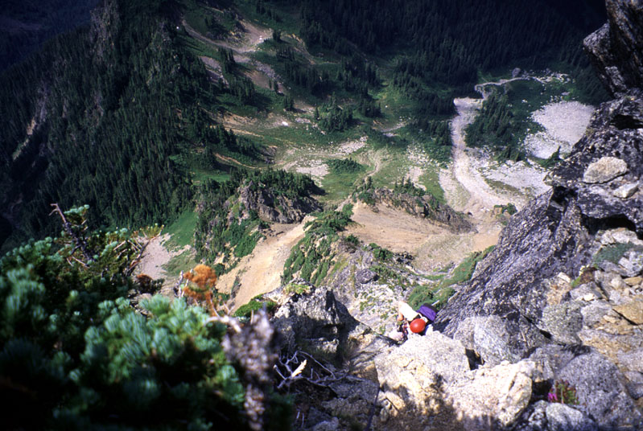
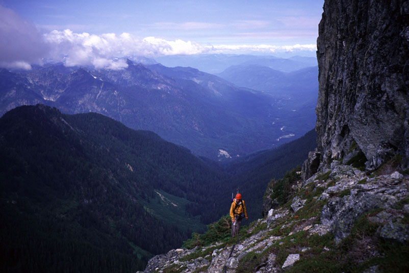
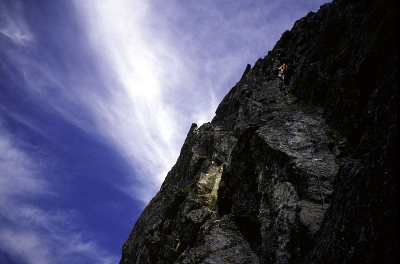
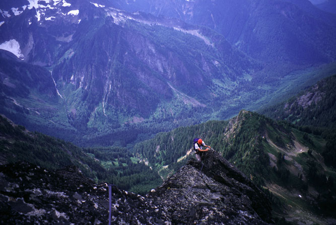
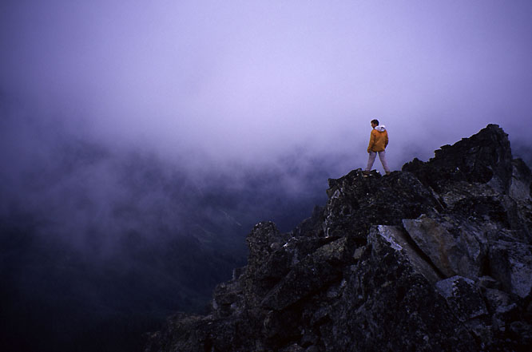
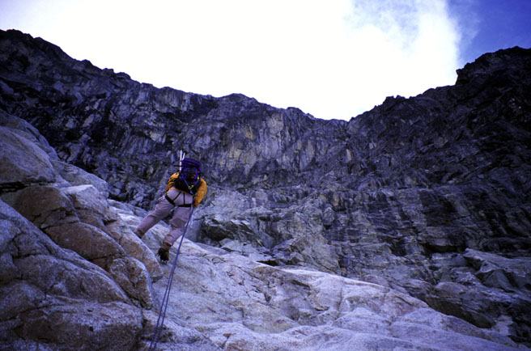
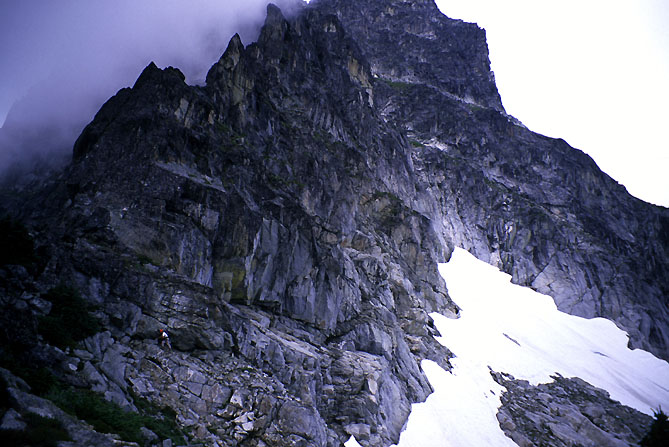
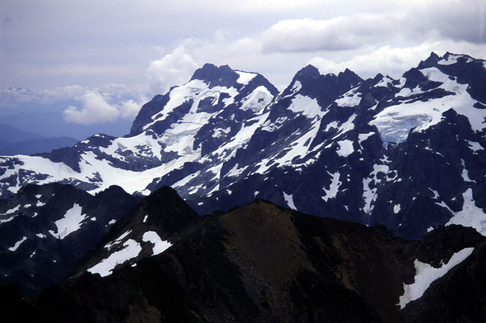
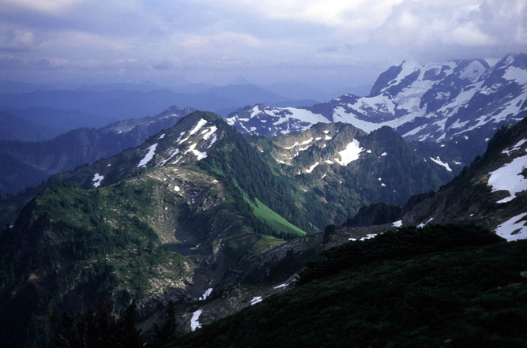

Sloan Peak, West Face
West Face (5.7)
August 3, 2003
Theron wrote about the adventure here.
<font size=+5>I saw the West Face</font> of Sloan Peak on one of my first hikes in Washington. That night, I pawed through my green Beckey Book and marvelled at the lines drawn on the face indicating climbing routes. I was completely bewildered as to how anyone could do that! I imagined half-insane misguided men clinging to crumbling walls, succeeding by a series of lucky near-misses. I never expected to enter their ranks then!
Gear: A 60 meter 8.5 mm rope which we doubled for the rock climbing. A standard climbing rack, including a #3 Camelot very useful at a crux. Ice ax and aluminum crampons. Appallingly, I wore tennis shoes because my boots are being resoled. Hiking poles were essential for steep trail and boulderfields. We wore rock shoes on the climb.
Theron and I were looking forward to the full day in the hills. Alex was going to join us, but he spent the previous day sailing until very late and winced at the thought of an early start. So it was that we began hiking at 7:30 am after the long drive from town. The Bedal Basin trail started out very nice in forest, then began entering avalanche paths filled with brush. After the third path we were soaking wet from the head-high “automatic car wash” we were receiving as we pushed through. Oh well, it’s bound to be a sunny day right? We crossed a major stream and followed the flagged trail between two streams until it entered a rocky watercourse. Occasional cairns marked the way as we scrambled up and beside the stream, stopping to drink some water just before the trail re-enters forest. A short but steep forest trail dropped us off in the Basin.

Lovely Bedal Basin.
It was 9:30 am, and we were intimidated by the huge face of rock above. Eventually we recognized that the climb is further to the right on blockier terrain. A black buttress reminded me of Snow Creek Wall, and to it’s right was white and gray rock that looked holdless and vertical. As we scrambled up an endless streambed to the right, that impression was confirmed.
We entered a 3rd class gully of smooth but solid rock. Theron preferred a way around the corner so he disappeared to try his route. Partway up he reappeared on a cliff. “See you in 5 minutes!” he said as he vanished back around the corner for an easier way. I continued on mud, rock and grass handholds, focused on placing each limb solidly. Eventually I reached steep hiking terrain again, and wondered where Theron was. I called his name a few times, creating vast echos on the Face. I started to wonder if he had fallen or was stranded. Remembering that easier terrain to the right seemed to meet a ridge crest, I decided he might have gone that way. Not being keen to climb down what I’d come up, I decided to hike up to the crest then descend looking for him. Finally, much to my relief I heard him answer my call. He had backtracked and downclimbed, then come up the same gully I did. Back in sync, we continued up a tedious slope a few hundred feet apart. I reached the ridge crest with some 4th class mud and schrub climbing, and Theron used a better gully to the left.
We ate some lunch. All I had was a pack of Tollhouse Cookies purchased in Granite Falls. There was a strange conversation in the general store:
“Not very busy today, huh?”
“Oh no, but you should be here at 2 am - my boss says people are coming in and out all night!”
“Wow, it’s amazing to have a 24 hour store out here,” I said, remembering the sign outside.
“Nooo, “ she said with a little laugh. “We open at 5, that’s when my shift starts!”
We choked down some 4-day-old “fresh” turnovers and left, not particularly keen on being there after dark.
At 11:30 we were roped up and raring to go. I took off for some 3rd and 4th class on the crest of the spur. We reached a broad ledge and went a bit to the right. From the high point of the ledge, we were able to begin climbing rock back left. The exposure was already great, and I placed three pieces of gear fairly close to each other. Only the last one was any good. The way became blanker. After a good cam placement I edged around a corner into a chimney. I climbed up to a roof in the chimney with a fixed nut. I couldn’t reach the cable but my #3 Camelot provided great protection. “Theron, can you give me a belay for the next 15 feet?” I called.
After a moment, “sure!” Squeezing my hand in the crack overhead, I moved out of the alcove with my feet smearing on the right wall. Untrustworthy lichen covered slabs on the left of the crack convinced me to lieback for a while, feet up near my head. Standing again above the roof, I looked for some gear placements in a flaring pod. It was not to be, so I kept climbing to easier terrain, and Theron began to climb when the rope ran out. I reached a tree with a network of slings around it, and set a belay.

Just above the difficult chimney pitch.

Theron on a mid-face ledge.
We moved the belay up and Theron took off around the corner to the right. The views were amazing from here, and the invigorating technical climbing felt great. The rope came tight and I followed on solid rock with small edges up to another ledge with Theron. He took off again for a long and exciting pitch.

Theron leading pitch 4 - a long ramp to a vertical step.
A tricky move getting onto a ramp was followed by amazing scoups and buckets on the lower ramp. Abandoning the grassy crack, Theron climbed the scoups for 15 feet of unexpected fun. Higher, he made some difficult moves up vertical rock to get established on the face above the ramp. The rope came tight and I followed, enjoying the climbing and impressed with the moves up loose, creaky rock above the ramp. I had trouble cleaning a nut at the start of a rightward traverse, then joined Theron on a tiny ledge.
“I see two choices,” said Theron. “Right or left.”
The right side looked doable, either climbing in a gully or traversing above it. The left required an exposed walk around a corner to investigate. I took this way, and was pleased to find the rock developing into a ridge. Placing gear at intervals, I climbed the sharpening ridge to a blank fin of lichen-encrusted rock. Here I hand-traversed the crest with feet smearing somewhat sketchily on the lichen. “That was 5.8!” I muttered at the end. Above was scrambling terrain, so I set a belay and admired the beautiful basins beneath us and the somber beclouded peaks to the west. Theron arrived, and we tied coils of rope around us for the walk up to a gully where scrambling led us unexpectantly to the Corkscrew Route trail.

Theron on the last pitch of technical climbing - an exciting ridge of solid rock.

Theron on the summit with clouds coming from the west.
We scrambled to the summit. I had been here once before with Phil Fortier on a beautiful August day two years ago. Theron and I laughed at that old summit entry: “The North Ridge was too brown to climb.” It’s true, it really didn’t look appealing! An entry from Scott Harder the previous week mentioned my name which was odd. I’ll have to mention him on some other summit log.
After admiring peaks and taking pictures for a while, we headed down to our packs on the trail and continued along the Corkscrew route until reaching a gully with a rappel sling. The exposed steep heather terrain made us kind of nervous! We made one rappel down the “open book” Beckey mentions. Theron lost his lens cap in here for the third (but not final) time of the day. His camera is much-loved, but sometimes troublesome! Wandering down granite ramps we were kind of uncertain if we should rappel or keep climbing down. It looked like any rappel would leave us stranded in the middle of a cliff, so we kept climbing down, eventually passing some rappel slings. A few difficult boulder problems kept it from feeling easy.
Once near the snow, Theron found a rappel anchor and we used it. It consisted of one of my slings around a block, and Theron hammered rocks into cracks to prevent the sling from lifting out. It was rather ingenious, and Theron was justly proud of his creation. After taking a picture of it, his lens cap disappeared for good, probably into the moat between snow and rock.

On rappel to the permanent snowfield.

Scrambling to a notch on the way back to Bedal Basin.
Theron now kicked steps across some steep snow. We aimed for a notch on the west. The step kicking became difficult on a final steep traverse, we wished we had gone down to the rocks below. Finally we could take off crampons and hike down into a bowl, then sidehill tediously to a wooded pass. It was getting late, but we could see Bedal Basin below. Getting there was made difficult by a steep and slippery grass slope. A sitting glissade was the proper way to descend it, as there wasn’t the slightest ledge for a foot to gain purchase. We controlled our sliding speed by grasping bushes as we descended. Without breaking it wouldn’t have been pretty!
The rest of the hike out was uneventful. We drank some delicious water from a stream, and zoomed out pretty quickly to the car. I remember practically running through the berry patches, grabbing the largest berries and eating 3-4 at a time. Sometimes we’d stop and graze in the evening light.

Beautiful peaks to the west.

Goodbye for now!